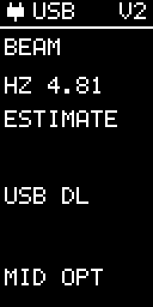
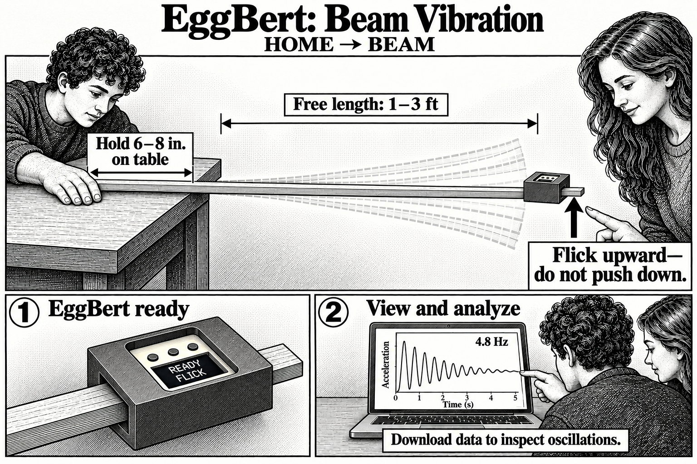

Beam Vibration
One student holds the beam firmly against the table while the other operates EggBert. The free length can be one to three feet. Press the middle button to arm, then hold still until READY appears. Flick the free end upward to start the 15-second recording at 480 samples per second.
When finished, EggBert shows an estimated vibration frequency, or NO CLEAR PERIOD if it cannot identify a repeating signal. Connect to the Capture Viewer to download and inspect the recording. MID OPT opens the erase options; download before erasing to run another trial. While waiting for a flick, the middle button cancels arming.
Current controls
Clamp the beam and position EggBert as shown below. Press middle to arm and hold still until READY. Flick the free end upward to trigger a 15-second recording at nominal 480 samples per second.
The result shows estimated frequency in hertz or NO CLEAR PERIOD. Download the recording to inspect it. MID OPT opens erase options; save before erasing for another trial.
Middle: cancel while waiting for a flick. Top: return HOME before arming. During recording, wait for completion. Beam uses low-g on both versions, with no ready/event sounds during acquisition.

The experiment illustration below shows an earlier screen arrangement. Follow the current controls above.
